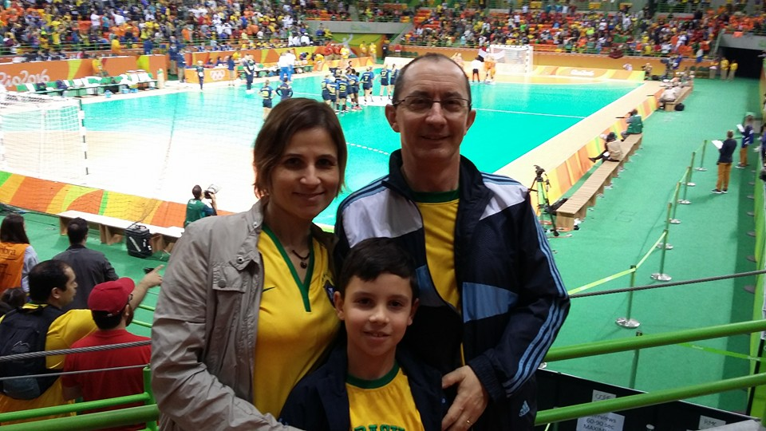
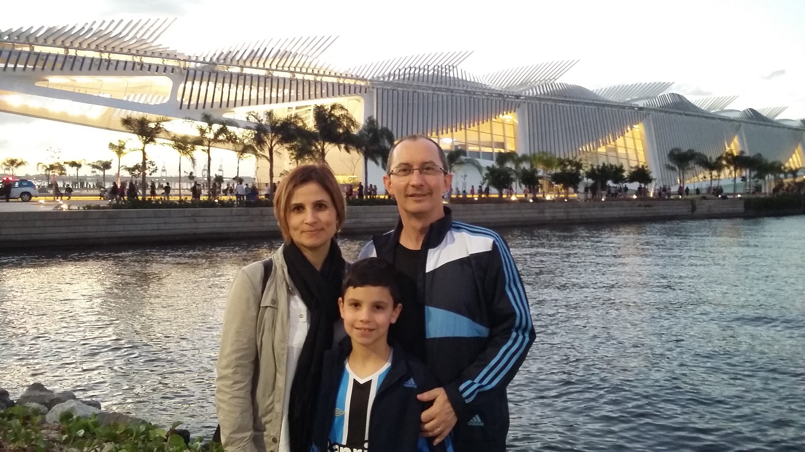
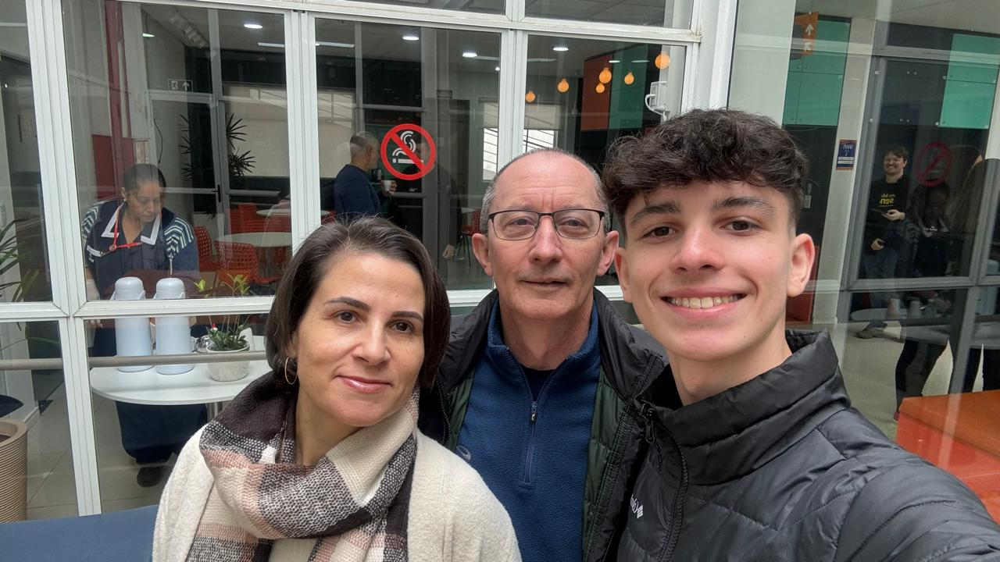

Oi pai! Oi mãe! Obrigado por sempre me apoiarem, ajudarem e estarem ai meu lado sempre que eu
preciso e
precisei. Se não fosse por vocês eu nunca chegaria onde estou hoje. Não tenho palavras para
descrever o
quanto sou grato por tudo. Não sou bom com palavras, porém quero que saibam que gosto muito de
vocês,
vocês são incríveis e merecem tudo que tem, e muito mais. Que, com esse breve texto eu consiga fazer
vocês compreenderem o quanto gosto de vocês, verdadeiramente.💕


Oi filho querido! Estamos muito emocionados e agradecidos pela tua linda homenagem no teu site. Saiba
que te
amamos muito, o tempo todo, e queremos que saibas também que apoiamos e continuaremos apoiando tuas
escolhas
pessoais e profissionais. A tua produção está maravilhosa! Uma grande e agradável surpresa positiva.
Siga em frente,
estude, trabalhe, divirta-se. Como já dissemos, sempre que julgar necessário, estaremos de prontidão
para
colaborar e te apoiar. E vamos seguir viajando por esse mundão! Beijos.